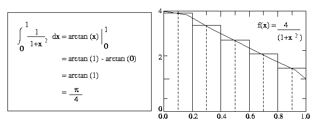

|
Prog. on Multi-Core Processors with Intel Xeon Phi : Intel TBB
|
|
The Intel TBB library is a template based runtime library for C++ code using threads and supporting task oriented load balancing. Intel TBB is open source and available on many different platforms with most
operating systems and processors.
Example programs using
compiler pragmas, directives, function calls, and environment variables, Compilation and execution
of Intel TBB programs, programs numerical and non-numerical computations
are discussed.
Compilation :
Intel TBB and Vectorization / Not to Vectorization
Execution :
Set Up Run time Prog. Env.
Execution
Intel TBB Script
Offload Information :
Compiler Offload Pragma & Report
Compiler Offload Clauses
Tuning & Performance :
KMP Thread Affinity
Memory Alignment
KMP-Script
Intel TBB :
Background
Overview
TBB Library API Calss
TBB Memory Allocators
Using TBB Natively
Offloading TBB
Matrix - Computation Codes
Example 1 : Vector-Vector Addition using Intel TBB Framework
Example 2 : Vector-Vector Multiplication using Intel TBB Framework
Example 3 : Matrix - Matrix Multiply using Intel TBB Framework
Example 4 : Pie Computation - Intel TBB Framework
Example 5 : Poisson Solver using Intel TBB Framework
References :
Xeon Phi Coprocessor
|
|
The key specifications of Intel Xeon Coprocessor
|
| Specification |
Feature |
| Clock Frequency |
1.091 GHz |
| No. of Cores |
61 |
| Memory Size / Type |
8 GB/GDDR5 |
| Memory Speed |
5.5 GT/sec |
| Peak DP/SP |
1.065/2.130 teraFLOP/s |
| Peak Memory Bandwdith |
352 GB/s |
|
|
|
|
Compilation of Sequential Programs : Compiler to Vectorize / NoVectorize
|
|
Using command line arguments (Vectorization & No Vectorization )
The compilation and execution of a program for an Intel Many Integrated Core (MIC)
architecture coprocessor (-mmic)
also known as Intel Xeon Phi Coprocessor are given below.
Compilation :
To compile the program : Using Intel C Compiler with Vectorization
# icc -mmic -vec -report=3 -O3 <program name> -O
<Name of executable>
For example to compile a simple seq-matrix-matrix-multiply.c program user can type on the command line
# icc -mmic -vec -report=3 -O3 <seq-matrix-matrix-multiply.c > -O
<seq-matrix-matrix-multiply>
To compile the program : Using Intel C Compiler without Vectorization
User can ask the complier not to vectorze the code with
-no -vec option and execute the code. It is possible to get less
performance.
# icc -mmic -no-vec -vec -report=3 -O3 <seq-matrix-matrix-multiply.c > -O
<seq-matrix-matrix-multiply>
To compile the program using Makefile Utility, Using Intel C Compiler with Vectorization
make
Note: If the Makefile has
some extension like Makefile_C
then user is required to type
make -f Makefile_C
(instead of simply typing make)
make -f make -f Makefile.OFFLOAD
(Compile using OFFLOAD mode)
make -f make -f Makefile.NATIVE
(Compile using NATIVE mode)
make -f Makefile.OFFLOAD clean
(Clean the Object files & Binaries )
|
|
When compiling programs that employ TBB constructs, be sure to link in the Intel TBB shared library
with
-ltbb If you don't undefined references will occur.
icc -mmic -ltbb foo.cpp
The details of syntax of the command to compile the program on Intel Xeon Phi are given in the
following table.
|
|
|
|
|
Set Up Run time Prog. Env.
|
|
Setting Up the Prog. Environment : Clik Plus programs to Scale upto 60 Cores
User can set the number of threads and the affinity using environment variables
omp_set_num_threads(32);
kmp_set_defaults("KMP_AFFINITY = compact");
in the coprocessor's Linux Operating environment. That is
export OMP_SET_THREADS=32
export KMP_AFFINITY = compact
Below given enviornment varaibles should be declared before execution of the program
as per application requirements.
# set environment variables
export MKL_NUM_THREADS=32
export KMP_AFFINITY = granularity=fine,compact
export MIC_ENV_PREFIX=PHI
export PHI_MKL_NUM_THREADS=236
export PHI_KMP_AFFINITY=granularity=fine,compact
export OFFLOAD_REPORT=2
export MKL_MIC_ENABLE=0
Un-setting Up the Prog. Environment :
#unset env variables
unset MKL_NUM_THREADS
unset KMP_AFFINITY
unset MIC_ENV_PREFIX
unset PHI_MKL_NUM_THREADS
unset PHI_KMP_AFFINITY
unset MKL_MIC_ENABLE
|
|
|
|
|
|
|
Execution of Programs : Sequential & Clik Plus
|
|
To execute the applicaiton on coprocessor : Log-in to Xeon-Phi Coprocessor
To execute the program on coprocessor, the user Log-in to the
coprocessor, then simply type the name of executable
on command line.
./< Name of executable>
For example to execute a simple
seq-matrix-matrix-multiply.c application, user
types the command
./seq-matrix-matrix-multiply
For example to execute a simple
openmp-matrix-matrix-multiply.c OpenMP application, user types
./openmp-matrix-matrix-multiply
The expected output:
Initializing the Vectors
Computation startd
gigaFLOPs = ****
Time = ****
gigaFLOPs per Sec = *****
|
|
|
|
|
|
|
Execution - Script
|
|
Script to run on Xeon Phi in Native Mode :
export MKL_MIC_ENABLE=0
export KMP_AFFINITY=
"granularity=thread,balanced"
export LD_LIBRARY_PATH=/tmp
nThreads=240
i=200
while[ $i -le 1000 ]
do
echo-n
"mic"
./openmp_matrix_matrix_multiply $i $nThreads 8
let i+=100
done
|
|
|
|
|
|
|
Compiler Offload Pragma & Report
|
Details of Code : Intel compiler's offload pragmas :
On Xeon-host, the code to transfer the data to the Xeon Phi coprocessor is automatically
created by the Intel complier. When the code is written using OpenMP pragmas to C/CC+ Fortran
code, the Intel complier encounters an offload pragma, it generates code for both the coprocessor
and the host.
The programmer responsibility is to include appropriate offload pragmas by adding data clauses.
Details can be found under "Offload Using a Pragma" in the Intel compiler documentation as
given in the references.
-
Using #pragma offload taret(mic) :
In this example, how to offload the matrix computation to the Intel Xeon Phi
coprocessor using #pragma offload target(mic)
is shown
-
Choose the target MIC out of Multiple Coprocessors :
The user could also specify the Intel Xeon-Phi Coprocessor
Number_Id in a system with multiple coprocessors (Ex. PARAM YUVA
Compute Nodes ) by using
#pragma offload target(mic:Number_Id).
|
Other Information about Intel compiler's offload :
-
Use -no-offload :
Offloading is enabled per default for the Intel compiler. Use
-no-offload to
disable the generation of offload code.
-
Vec Report :
Using the compiler option -vec-report2 one can see which loops have been vectorized
on the host and the MIC coprocessor:
-
Printing Data transfer (OFFLOAD_REPORT) :
By setting the environment variable OFFLOAD_REPORT
one can obtain information about
performance and
data transfers at runtime:
hypack-01: ~offload_c>
export OFFLOAD_REPORT=2
|
|
|
|
|
|
Intel Xeon Phi Coprocessor Compiler Offload Clauses
|
|
The Intel Xeon-Phi coprocessor programming environment provides " offload pragma" which
provides additional annotation so the compiler can correctly move data to and from
the external Xeon Phi Card. Note that single or multiple OpenMP loops can be contained
within the scope of the offload directive. The clauses are interpreted as follows:
Offload: The offload pragma keyword specifies different clauses that contain
information relevant to offloading to the target device.
target(mic:MIC_DEV)
is the target clause that tells the compiler to generate code for both the host
processor and the specified offload device i.e., Xeon Phi Coprocessor.
The constant parameter MIC_DEV is an an integer associated with Xeon-Phi device.
Note that the offload performs different operations as per requirement.
-
The offload runtime will schedule offload work within a single application in
a round-robin fashion, which can be useful to share the workload amongst
multiple devices.
-
The offload runtime will utilize the host processor when no coprocessors are present
and no device number is specified (for example, target(mic)).
-
programmers can use _Offload_to to specify a device in their code.
-
It is the responsibility of the programmer to ensure that any persistent
data resides on all the devices.
During the round-robin scheduling, the persistent data resides on all the devices
is important from performance point of view and to avoid PCIe bottlenecks. In general,
only use persistent data when the device number is specified.
-
Choose the target MIC out of Multiple Coprocessors :
The user could also specify the Intel Xeon-Phi Coprocessor
MIC_DEV in a system with multiple coprocessors (Ex. PARAM YUVA
Compute Nodes ) by using
#pragma offload target(mic:MIC_DEV).
in(Matrix_A:length(size*size)):
The in(var-list modifiersopt) clause explicitly copies
data from the host to the coprocessor. Note that:
-
The length(element-count-expr) specifies the number of elements to be transferred. The compiler will perform the conversion to bytes based on the type of the elements.
-
By default, memory will be allocated on the device and deallocated on exiting the scope of the directive.
-
The
alloc_if(condition) and
free_if(condition) modifiers can change the default behavior.
out(Matrix_A:length(size*size)):
The in(var-list modifiersopt) clause explicitly clause explicitly copies data from the coprocessor to the host. Note that:
-
The length(element-count-expr) specifies the number of elements
to be transferred. The compiler will perform the conversion to bytes based on the type of the elements. By default, memory will be deallocated on exiting the scope of the directive.
-
The
free_if(condition) modifier can change the default behavior.
|
|
|
|
Tuning & Performancre : KMP Thread Affinity
|
-
On Single a core, we can employ four threads. To ensure maximum performance, core needs to execute FMA calculations on evey
clock cycle. To do this, core must be running more thatn one thread. i.e., two or three or four threads. The code is re-written
to execute on multiple threads, and eventually multiple cores.
-
OpenMP Framework, a widley used standard support by compilers for Intel Xeon Phi
coprocessors with
standard API and programming model for shared memory multiprocessing for HPC. OpenMP
parallel for) directive to enable the desired threading is used
and the loop iteratons are divided among the available threads and run in parallel.
-
In OpenMP implementation, each thread will work on a separate set of row array elements of Matrix and
offset variables are included in the code.
To achieve performance close to theoretical peak performance, two openMP calls are used :
omp_set_num_threads(32);
kmp_set_defaults("KMP_AFFINITY = compact");
The first OpeMP call sets the number of threads to use while running the code and the second one
setting AFFINITY to
compact will ensure that thirty two requested OpenMP
threads execute
on different cores.
-
A subset of main memory is available to an application and main memory is organised into pages.
The two dimensional array Matrix_A and Matrix_B are accessed
along the rows. On a system that supports virtual memory, the memory addresses for different
applications
are virtualised : they are given logical addresses, assigned into virutal pages. A typical page
size is 4 or 8 Kbytes, but laret ones exist.
In fact, the physical pages that are available to program may be spread out in memory, and so the
virtual
pages must be mapped to physical ones. The page addresses are stored in page table and
translation-lookside buffer (TLB) a spcial cache that
stores the recently accessed entries in page table. TLB is crticial to performance and in this
exmaple cache reloads plus a large number of
TLB misses may not result.
-
Loop Optimisation can give sinificant improvement in performance and loop unrolling can
help to improve cache line utilization by improving data reuse. Inner loop unrolling with
approriate OpenMP pragmas may further improve the performance. Loop unrolling can also
help to increase the instruction-level parallelism, or ILP. The compiler switches can
help to perform loop unrolling.
-
Use of Pointers and Contiuous Memory in C Lanuguage : The pointer aliasing problem
exists in many application codes and it prevents a compiler from performing many progrm optmizations
since it can nto determine that they are safe. It is assumed that all pointers may reference any
memory address. The performance can be obtained, if pointers are guaranteed to point to portions
of nonoverlapping memory. The restrict key-word is a feature
of the C99 Standard which is supported by compiler and it may improve the performance.
-
The number of threads in an OpenMP enviornment and the mapping of cores on Intel Xeon-Phi Coprocessor
play an important role to achieve maximum performance of developer code.
The KMP_AFFINITY environment variable specifies the thread-to-core affinity.
There are three preset schemes: compact, scatter, and balanced
and the user explicitly define the affinity that works best for their application. The choice
of affinity schemes depends upon the memory access, data sharing and work-load for each thread,
affinte to core. The default runtime thread affinity can also be used and it may change
between software releases. For consistent application performance across software releases,
do not rely on the default affinity scheme.
-
Compact tries to use minimum number of cores by pinning four threads to a
core before filling the next core
-
Scatter tries to evenly distribute threads across all cores
-
Balanced tries to equally scatter threads across all cores such that adjacent threads (sequential thread numbers) are pinned to the same core. One caveat being that all cores refers to the total number of cores -1 because one core is reserved for the operating system during an offload
Interested readers can find more about the affinitization schemes
|
|
|
|
|
|
|
Script : Using KMP Thread Affinity
|
|
Script to run on Xeon Phi in Native Mode :
export MKL_MIC_ENABLE=0
export KMP_AFFINITY=
"granularity=thread,balanced"
export LD_LIBRARY_PATH=/tmp
nThreads=240
i=1
while[ $i -lt 100 ]
do
echo-n
"mic"
./matrix_matrix_executable 1000 $i 10
leti++
done
|
|
|
|
|
|
|
Tuning & Performance : Memory Alignment for Vectorization
|
-
Memory Alignment for Vectorization :
The matrices size is dynamically allocated using posix_memalign(), and their sizes
must be specified via the length() clause. Using in, out and inout one can specify
which data has to be copied in on Intel Xeon-Phi Coprocessor from host.
-
Data alignment - 64-Byte : It is recommended that for Intel Xeon Phi data is 64-byte (512 Bits) aligned as
given in the MIC architecture.
-
Alignment using #pragma vector alignment :
For proper alignment of data to get performance using Intel compiler vectorization,
#pragma vector aligned is used. This tells the compiler that all array data accessed
in the loop is properly aligned.
-
In addition, the -std=c99 directive command-line option tells the compiler to allow use
of the restrict keyword and C99 VLAs. Note that C99 restrict keyword that specifies that
the vectors do not overlap. (Compile with -std=c99 is required for efficient vectorization)
-
For SSE, the data is aligned to 32 Bytes (256 Bits) for AVX and 16 Bytes (128 Bits) for
SSE and for MIC architecture, data should be aligned to 64 Bytes (512 Bits) for the
MIC architecture.
|
|
|
|
|
|
|
Intel TBB : Introduction & Background
|
|
Using Intel TBB, it is possible that data parallel application can scale well past one hundred threads
on Intel Xeon Coprocessors utilizing the highly parallel capabilities of the MIC architecture.
TBB offers programming methods that support creating this many threads in a program. In the easiest
way the one main production loop is transformed by adding a single directive or pragma enabling the
code for many threads. The chunk size used is chosen automatically.
Intel TBB uses tasks instead of threads and automatically produce
more portable code which emphasizes scalable, data parallel programming.
With the higher level of data-parallel programming in applications, multiple threads of TBB can work
on smaller chunks of computations and leading to scalability and portability.
Intel Threading Building Blocks ( TBB ) is a powerful solution for C++ programmers to address
tasking in general, and a number of
related C++ issues like thread-aware memory allocation, thread safe versions of key STL con-tainer
classes, portable locks and atomics, and timing solutions.
Intel TBB can use components of
TBB include the scalable memory allocator and tick_count timing facility.
Some portions of TBB concepts can be used.
|
|
|
|
|
|
|
Intel TBB : Overview
|
|
Intel Threading Building Blocks (TBB) offers a rich and complete approach to expressing parallelism
in a C++ program. It is a library that helps you take advantage of multi-core processor performance without having to be a threading expert. Threading Building Blocks is not just a threads-replacement library.
It represents a higher-level, task-based parallelism that abstracts platform details and threading mechanism for performance and scalability and performance.
TBB implements "task stealing" to balance a parallel workload across available processing cores in
order to increase core utilization and therefore scaling. Initially, the workload is evenly divided
among the available processor cores. If one core completes its work while other cores still have a
significant amount of work in their queue, TBB reassigns some of the work from one of the busy
cores to the idle core. This dynamic capability decouples the programmer from the machine,
allowing applications written using the library to scale to utilize the available processing cores
with no changes to the source code or the executable program file.
Using TBB, it is possible to create applications that take advantage of new processors with more
and more cores as they become available and achieve scalability in performance with respect to
increase in problem size. Threading Building Blocks is a library that supports scalable parallel
programming using standard C++ code. It does not require special languages or compilers.
The advantage of TBB is that it works at a higher level than raw threads.
|
|
|
|
|
|
|
Basic TBB Library Templates
|
|
TBB Template devide in Three parts.
Basic algorithms:
1.parallel_for:
parallel_for(blocked_range<T>(begin,end,grainsize),body object)
A parallel_for<Range,Body> represents parallel execution of Body over each value in Range. This template function tbb::parallel_for recursively splits the iteration space into chunks and runs each chunk on a separate thread. A blocked_range<T> is a template class provided by the library. It describes a one-dimensional iteration space over type T. begin and end are the limits of the iteration space. grainsize refers to size of each chunk. Body object is an loop body object, in which operator() process a chunk.
2.parallel_reduce:
parallel_reduce(blocked_range<T>(begin,end,grainsize),body object)
A parallel_reduce<Range,Body> performs parallel reduction of Body over each value in Range. This template function can parallelize the loop if iterations are independent. TBB defines parallel_reduce similar to the parallel_for.
3.parallel_scan:
parallel_scan(blocked_range<T>(begin,end,grainsize),body object)
A parallel_scan<Range,Body> computes a parallel prefix or parallel scan. The template function parallel_scan decides whether and when to generate parallel work. parallel_scan better suited for future systems with more than two cores.
Advanced algorithms:
1.parallel_while:
parallel_while<Body>
A parallel_while<Body> performs parallel iteration over items. The processing to be performed on each item is defined by a function object of type Body. The template class tbb::parallel_while can be used if the end of the iteration space is not known in advance, or the loop body may add more iterations to do before the loop exits.
2.parallel_sort:
void parallel_sort(RandomAccessIterator begin,RandomAccessIterator end,const Compare& comp );
A call to parallel_sort(i,j,comp) sorts the sequence [i,j) using the third argument comp to determine relative orderings.
void parallel_sort(RandomAccessIterator begin,RandomAccessIterator end,const Compare& comp );
A call to parallel_sort(i,j) is equivalent to parallel_sort(i,j,std::less<T>).
parallel_sort provides an unstable sort of the sequence [begin1,end1). This sort is a comparison sort with an average time complexity O(n log n).
3.Pipeline:
class pipeline;
A pipeline represents the pipelined application of a series of filters to a stream of items. Each filter is parallel or serial.
class filter;
A filter represents a filter in a pipeline. A filter is parallel or serial. A parallel filter can process multiple items in parallel and possibly out of order. A serial filter processes items one at a time in the original stream order.
Containers:
1.concurrent_queue:
concurrent_queue<T>
The template class concurrent_queue<T> implements a concurrent queue with values of type T. This is bounded data structure, that permits multiple threads to concurrently push and pop item from the queue.
Pushing is provided by the push method.
Pop is carried by blocking and nonblocking methods.
pop_if_present
It is nonblocking, if the queue is empty, it returns anyway.
Pop
This method blocks until it pops a value.
2.concurrent_vector:
concurrent_vector<T>
A concurrent_vector<T> is a dynamically grow able array of items of type T for which it is safe to simultaneously access elements in the vector while growing it.
3.concurrent_hash_map:
concurrent_hash_map<Key,T,HashCompare>
A concurrent_hash_map<Key,T,HashCompare> is a hash table that permits concurrent accesses. The table is a map from a key to a type T. The HashCompare traits type defines how to hash a key and how to compare two keys. A concurrent_hash_map maps keys to values in a way that permits multiple threads to concurrently access values.
|
|
|
|
|
Memory Allocation in Multi-Threaded Prog.
|
|
Scalable Memory Allocators :
Threading Building Blocks comes with a scalable
allocator that supports the same signatures as std::allocator.
The solution to the challenges of concurrent memory allocation is to use a scalable memory allocator,
either in Intel Threading Building Blocks or in another third-party solution. The TBB scalable memory allocator utilizes a memory management algorithm divided on a per-thread basis
to minimize contention associated with allocation from a single global heap.
In the TBB scalable memory allocator, each thread uses its own memory heap for object allocation. There is no global lock, the allocation is fast and in most cases does not require any lock to be acquired. However there is no guarantee of non-blocking behavior, as from time to time the allocator needs to access the global memory pool to request a new big piece of memory. Eventually, every allocator uses system calls such as mmap or VirtualAlloc to request memory from an operating system, which also somehow protects consistency.
Threading Building Blocks offers two choices :
scalable_allocator
This template offers just scalability, but it does not completely protect against false sharing. Memory is returned to each thread from a separate pool, which helps protect against false sharing if the memory is not shared with other threads.
cache_aligned_allocator
This template offers both scalability and protection against false sharing. It
addresses false sharing by making sure each allocation is done on a cache line.
mmap
Memory-mapped I/O lets us map a file on disk into a buffer in memory so that, when we fetch bytes from the buffer, the corresponding bytes of the file are read. Similarly, when we store data in the buffer, the corresponding bytes are automatically written to the file.
The mmap() function establishes a mapping between a process' address space
and a file or shared memory object. The format of the call is as follows
void* mmap(void *start,size_t length,int prot,int flags,int fd,off_t offset);
The mmap() function asks to map length bytes starting at offset offset from the file (or other object)
specified by the file descriptor fd into memory, preferably at address start. This latter address is a
hint only, and is usually specified as 0. The actual place where the object is mapped is returned by
mmap().
The parameter prot determines whether read, write, execute, or some combination of accesses are permitted to the data being mapped. The prot should be either PROT_NONE or the bitwise inclusive OR of one or more of the other flags in the following table, defined in the header <sys/mman.h>.
Hoard
The Hoard memory allocator is a fast, scalable, and memory-efficient memory allocator. It runs on a variety of platforms, including Linux, Solaris, and Windows. Hoard is a drop-in replacement for malloc() that can dramatically improve application performance, especially for multithreaded programs running on multiprocessors.
Using Hoard is easy. On UNIX-based platforms, all you have to do is set one environment variable. You do not need to change any source code. You can use the LD_PRELOAD variable to use Hoard instead of the system allocator for any program not linked with the "static option" (that's most programs).
LD_PRELOAD="/path/libhoard.so"
|
|
|
|
|
Using TBB Natively
|
|
TBB parallel programming model codes run natively on the Intel Xeon Phi coprocessor
and can scale upto larger number of threads.
In order to initialize your compiler environment
variables needed to set up TBB correctly, typically the
/opt/intel/composerxe/tbb/bin/tbbvars.csh
or
tbbvars.sh
script with intel64 as the argument is
called by the
/opt/intel/composerxe/bin/compilervars.csh
or
compilervars.sh
script with
intel64 as argument. (e.g. source /opt/intel/composerxe/bin/compilervars.sh intel64)
A minimal C++ TBB example looks as follows:
#include "tbb/task_scheduler_init.h"
#include "tbb/parallel_for.h"
#include "tbb/blocked_range.h"
using namespace tbb;
int main() {
task_scheduler_init init;
return 0;
}
The using directive imports
the namespace tbb
where all of the library's classes and functions are found. The
namespace is explicit in the
first mention of a component, but implicit afterwards. So with the
using namespace
statement present you can use the library component identifiers without having to write out
the namespace
prefix tbb before each of them.
The task scheduler is initialized by instantiating a
task_scheduler_init object in the main function.
The definition for the
task_scheduler_init class is included from the corresponding header
file. Actually any thread using one of the provided TBB template algorithms must have such an
initialized
task_scheduler_init object. The default constructor for the
task_scheduler_init object informs
the task scheduler that the thread is participating in task execution, and the destructor informs
the scheduler that
the thread no longer needs the scheduler.
With the newer versions of Intel TBB as used in a MIC environment the
task scheduler is automatically initialized, so there is no need to explicitely initialize it
In the simplest form scalable parallelism can be achieved by parallelizing a loop of iterations
that can each run
independently from each other.
The parallel_for template
function replaces a serial loop where it is safe to process each element
concurrently.
The template function
tbb::parallel_for
breaks the iteration space into chunks, and runs each chunk on a separate thread.
The first parameter of template function call
parallel_for is a
blocked_range object that describes the entire iteration
space
from 0 to n-1. The
parallel_for divides the iteration space into subspaces for each of the
over 200 hard-ware threads.
blocked_range<T> is a template class provided by the TBB library describing a
one-dimensional T.
The
parallel_for class works just as well with other kinds
of iteration spaces. The library provides
blocked_range2d for two-dimensional spaces.
There exists also the possibility to define own spaces. The general constructor of the
blocked_range template class is
blocked_range(begin,end,grainsize) . The
T.
specifies the value type. begin represents the
lower bound of the half-open range interval [begin,end) representing the iteration space.
end represents the
excluded upper bound of this range. The grainsize is the approximate number of elements
per sub-range. The default grainsize is 1.
A parallel loop construct introduces overhead cost for every chunk of work that it schedules.
The MIC adapted
Intel TBB library chooses chunk sizes automatically, depending upon load balancing needs.
The heuristic normally works well with the default grainsize. It attempts to limit overhead
cost while still
providing ample
opportunities for load balancing. For most use cases automatic chunking is the recommended choice.
There might
be situations though where controlling the chunk size more precisely might yield better performance.
|
|
|
|
|
|
|
Offloading TBB
|
|
The Intel TBB header files are not available on the Intel MIC target environment by default
(the same is also
true for Intel Cilk Plus). To make them available on the coprocessor the header files have to
be wrapped with #pragma offload directives as demonstrated in the example below:
#pragma offload_attribute (push,target(mic))
#include " tbb/task_scheduler_init.h "
#include " tbb/parallel_for.h "
#include " tbb/blocked_range.h "
#pragma offload_attribute (pop)
Functions called from within the offloaded construct and global data required on the Intel
Xeon Phi coprocessor
should be appended by the special function attribute
__attribute__((target(mic))) .
Codes using Intel TBB with an offload should be compiled with -tbbflag
instead of -ltbb
On the coprocessor you can then export the library path and run the application.
|
|
|
|
|
PRAGMA SIMD
|
|
#pragma simd : This pragma gives the compiler permission to vectorize a loop even in cases where auto-vectorization might fail. It is the simplest way to manually apply vectorization.
Along with these keywords, you can use #pragma SIMD directives to communicate loop information to the vectorizer so it can generate better vectorized code. The five #pragma SIMD directives are: vectorlength, private, linear, reduction, and assert. The list below summarizes the five directives. For a detailed explanation please refer to the " Intel TBB Specification".
1. #pragma simd vectorlength (n1, n2 ...):
Specify a choice vector width that the back-end may use to vectorize the loop.
2. #pragma SIMD private (var1, var2, ...):
Specify a set of variables for which each loop iteration is independent of each other iterations.
3. #pragma SIMD linear (var1:stride1, var2:stride2, ...): Specify a set of variables that increase monotonically in each iteration of the loop.
4. #pragma SIMD reduction (operator: var1, var2...): Specify a set of variables whose value is computed by vector reduction using the specified operator.
5. #pragma SIMD assert: Directs the compiler to halt if the vectorizer is unable to vectorize the loop.
The Intel compiler was able to auto-vectorize the loops in the original application
after we have added the #pragma ivdep directive before each loop. Note that the
functions inside the loops use transcendental operations. The Intel compiler uses the
Short Vector Math Library (SVML) library to vectorize in this case. As an alternative to
#pragma ivdep directive, we can use the Intel Intel TBB Array Notation for
replacing the loops, which gives a very clear way to express loop vectorization
|
|
|
|
|
EXample Programs on Vector Vector Addition and Multiplication
|
|
Example 1 :
Vector - Vector Addition on Xeon-Phi using Intel TBB framework
Objective
Input
Description
Output
(Download source code :
vect-vect-addition-intel-tbb-native.cpp;
Makefile_intel_tbb.NATIVE ;
env_var_setup_intel_tbb.sh;
|
- Objective
Extract performance in G/flops for Matrix Matrix addition
and analyze the performance on Intel Xeon-Phi coprocessor
- Description
Two input vectros are filled with real data and Vector-Vector addition is performed
using compiler & vectorization features, OpenMP, OpenMP thread affinity, &
KMP_thread affinity.
It is assumed that both vectros are of same size. This example demonstrates the use of
Intel Xeon-Phi Programming features to obtaine the maximum achievable performance.
The key computation of the code is inner & outer loop i.e.,
for(i=0; i< n; i++) = 0.0;
{
Vector_C[i] = Vector_A[i] + Vector_B[i];
}
- Input
Number of threads, Size of the Matrices.
- Output
Prints the time taken for the computation and G/flops and the number of threads.
|
|
|
|
|
EXample Programs on Matrix Matrix Multiplication
|
|
Example. 3
Matrix - Matrix Multiply on Xeon Host using Intel TBB framework
(Download source code :
matrix-matrix-multiply-intel-tbb-native.cpp
Makefile_intel_tbb.NATIVE
env_var_setup_intel_tbb.sh;)
Objective
Input
Description
Output
Summary
|
|
Objective
Extract performance in G/flops for Matrix Matrix Multiply
and analyze the performance on Intel Xeon based on OpenMP.
Description
Two input matrices are filled with real data and matrix-matrix Multiply is performed
using compiler & vectorization features.
It is assumed that both matrices are of same size. This example demonstrates the use of
Intel TBB Programming features to obtain the maximum achievable performance.
The key computation of the code is two inner loops & an outer loop i.e.,
|
// Zero the Matrix_C matrix
for (int i = 0; i < size; ++i)
for (int j = 0; j < size; ++j)
Matrix_C[i][j] = 0.f;
// Compute matrix multiplication.
for (int i = 0; i < size; ++i)
for (int k = 0; k < size; ++k)
for (int j = 0; j < size; ++j)
Matrix_C[i][j] += Matrix_A[i][k] * Matrix_B[k][j];
}
}
|
|
|
In implementation, every thread will work its own row array section of input Matrix_A and multiply with
each column of Matrix_B, resulting to give an output array of resulting matrix Matrix_C. It is
assumed that the size of the two input square matrices is divisible by number of threads.
For convenience sake, we use one core and 2 or 4 four Intel TBB threads for Matrix-Matrix
Multiply algorithm.
|
|
Input
Number of threads , Size of the Matrices.
Output
Prints the time taken for the computation and G/flops and the number of threads.
|
|
Example 4 :
Pie Computation on Xeon-Phi using Intel TBB framework
(Assignment)
Objective
Input
Description
Output
|
- Objective
Write a Intel TBB program to compute the value of pi function by numerical integration of
a function f(x) = 4/(1+x 2 ) between the limits 0 and 1.
- Description
There are several approaches to parallelizing a serial program. One approach is
to partition the data among the processes. That is we partition the interval of
integration [0,1] among the processes, and each process estimates local integral over
its own subinterval. The local calculations produced by the individual
processes are combined to produce the final result. Each process sends its integral to process 0,
which adds them and prints the result.
To perform this integration numerically, divide the interval from 0 to 1 into n
subintervals and add up the areas of the rectangles as shown in the Figure 3 (n
= 5). Large values of n give more accurate approximations of pi.

Figure Numerical integration of pie function
We assume that n is total number of subintervals, p is the number
of processes and p < n. One simple way to distribute the total
number of subintervals to each process is to dividen by p. There
are two kinds of mappings that balance the load. One is a block mapping,
partitions the array elements into blocks of consecutive entries and assigns
the block to the processes. The other mapping is a cyclic mapping. It
assigns the first element to the first process, the second element to the
second, and so on. If n > p, we get back to the first process,
and repeat the assignment process for remaining elements. This process is
repeated until all the elements are assigned. We have used a cyclic mapping
for partition of interval [0,1] onto p processes.
- Input
Number of threads, Number of Intervals
- Output
Prints the time taken for the computation of Pie Value and the number of threads.
|
|
|
|
|
Example 5 :
Poisson Equation Solver on Xeon-Phi using Intel TBB framework
(Assignment)
|
|
|
|
|
| |
|